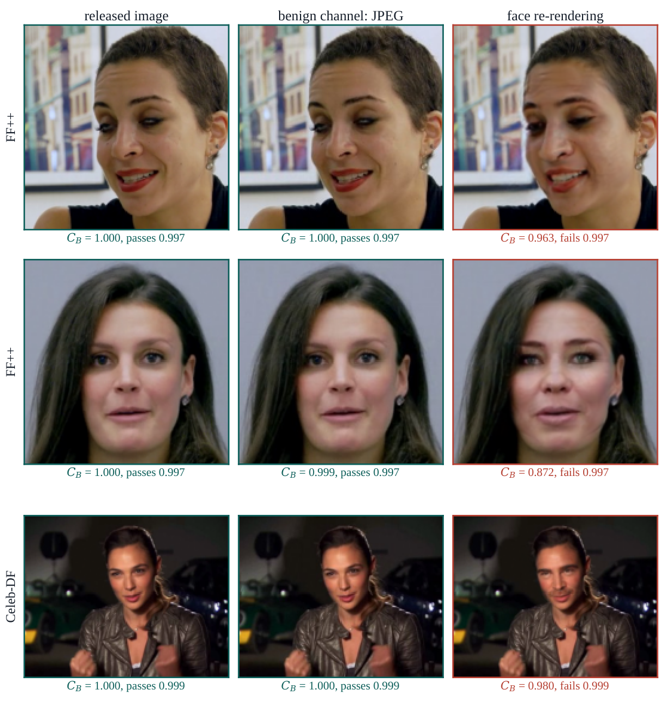

Face check
Catches face swaps on every dataset.
How well each method separates a face-swapped copy from the genuine release. 1.00 means always right; 0.50 is a coin flip.
0.50 · coin flip1.00 · perfect
| FF++ | Celeb-DF | DFDC | |
|---|---|---|---|
| Doctor Trigger (direct) | 1.00 | 0.99 | 0.99 |
| LIDMark | 1.00 | 0.74 | 0.84 |
| FaceSigns | 1.00 | 0.70 | 0.70 |
| StegaStamp | 0.91 | 0.57 | 0.52 |
| SepMark | 0.69 | 0.50 | 0.50 |
| KAD-Net | 0.54 | 0.50 | 0.50 |
| WAM | 0.50 | 0.50 | 0.50 |
| VINE-R | 0.50 | 0.50 | 0.50 |
Show table, including cross-dataset transfer
| Per-dataset | From FF++ → | From DFDC → | |||||
|---|---|---|---|---|---|---|---|
| Method | FF++ | CDF | DFDC | CDF | DFDC | CDF | FF++ |
| StegaStamp | 0.91 | 0.57 | 0.52 | 0.59 | 0.54 | 0.56 | 0.80 |
| FaceSigns† | 1.00 | 0.70 | 0.70 | — | — | — | — |
| SepMark† | 0.69 | 0.50 | 0.50 | — | — | — | — |
| WAM† | 0.50 | 0.50 | 0.50 | — | — | — | — |
| KAD-Net† | 0.54 | 0.50 | 0.50 | — | — | — | — |
| VINE-R† | 0.50 | 0.50 | 0.50 | — | — | — | — |
| LIDMark | 1.00 | 0.74 | 0.84 | 0.90 | 0.74 | 0.92 | 0.98 |
| Ours, image-only Sdf | 0.99 | 0.98 | 1.00 | 0.68 | 0.76 | 0.93 | 0.95 |
| Ours, direct spectral 1 − CB | 1.00 | 0.99 | 0.99 | 0.99 | 0.99 | 0.99 | 1.00 |
| Ours, record model Sfake | 1.00 | 1.00 | 1.00 | 0.98 | 1.00 | 0.97 | 1.00 |
†: fixed public weights; —: no dataset-specific training (paper Table 2).
Also 1.000 AUC on StarGAN, UniFace, InSwapper and SD inpainting (FF++; the paper marks this comparison as exploratory).
